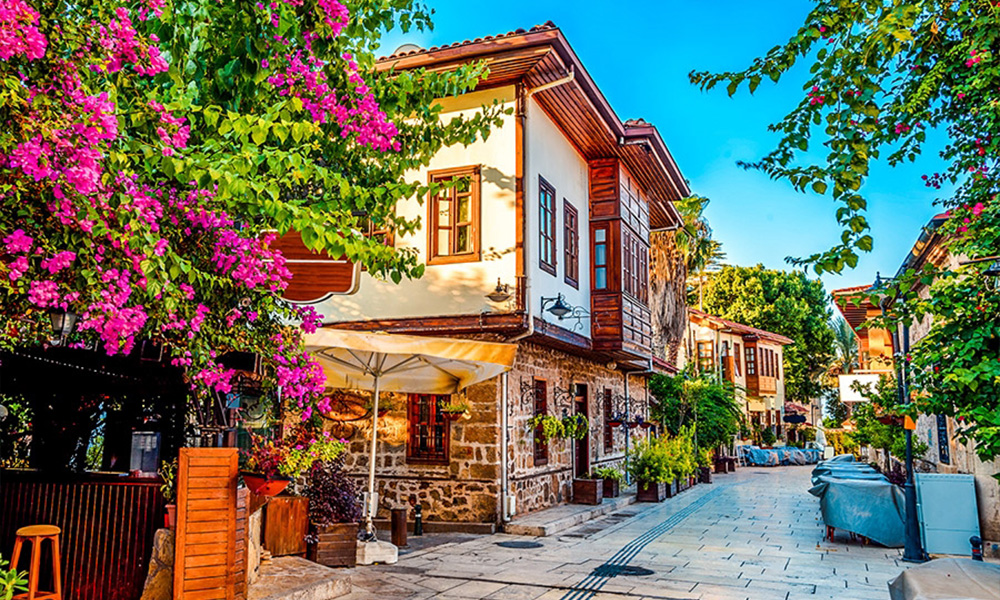
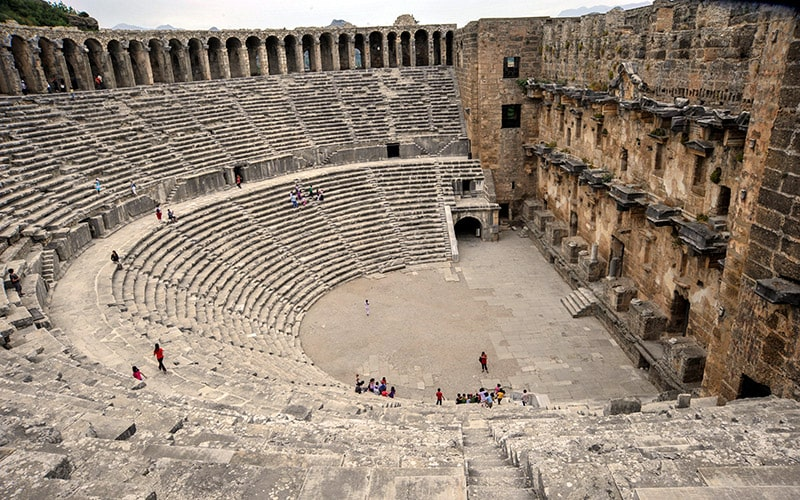

Historical Sites
Kaleici and City Center Structures

- Kaleici: The historic center of Antalya. It contains walls and civil architecture examples (wooden/stone houses) from the Roman, Byzantine, Seljuk, and Ottoman periods. The narrow street structure has survived to the present day.
- Hadrian's Gate (Three Gates): Built in 130 AD in commemoration of the visit of Roman Emperor Hadrian. It features three arched gates in Corinthian style and marble columns. It has been well preserved as it is integrated into the walls.
- Yivli Minaret: Built in the 13th century by Anatolian Seljuk Sultan I. Alaeddin Keykubad. It stands 38 meters high, with a fluted (eight-grooved) body and red brick masonry. It is one of Antalya's first Islamic structures.
Ancient Cities

- Aspendos: Famous for its Roman theater built in the 2nd century AD (Marcus Aurelius period) by architect Zenon. The structure, with a capacity of 15-20 thousand people, with its acoustic system and stage building, is the best-preserved ancient theater in Anatolia. The city's ancient aqueducts stretching for 1 km are examples of engineering.
- Termessos: A Pisidia city built at the summit of Güllük Mountain, 1,150 meters above sea level. Due to its natural fortifications, it was able to resist the siege of Alexander the Great in 333 BC. It contains a theater on the edge of a cliff, temples, and a large necropolis (cemetery) area.
- Olympos: One of the 6 major cities of the Lycian League with voting rights. Built in a river valley. It came under the control of the pirate Zenicetes and later came under Roman rule. It contains Hellenistic and Roman period remains intertwined with forest vegetation.
- Phaselis: A commercial port city founded by Rhodian colonists in the 7th century BC. It has three separate harbors: North, Center, and South. Aqueducts, a columned street connecting the harbors, and Hadrian's Agora form the city's main features.
- Perge: An important city of the Pamphylia region. Known for its Hellenistic period round towers at the entrance to the city, its columned main street with a water channel running through its center, its stadium of 12,000 capacity, and its sculpture workshops. It is a stop on the Apostle Paul's missionary journeys.
- Myra: Located in the Lycia region (Demre). House-type rock tombs carved into steep mountain slopes and a large-capacity Roman theater are the city's remains. It is the center where Bishop Nicholas (Santa Claus) served during the Early Christian period and where a church built in his name is located.